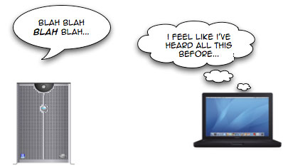
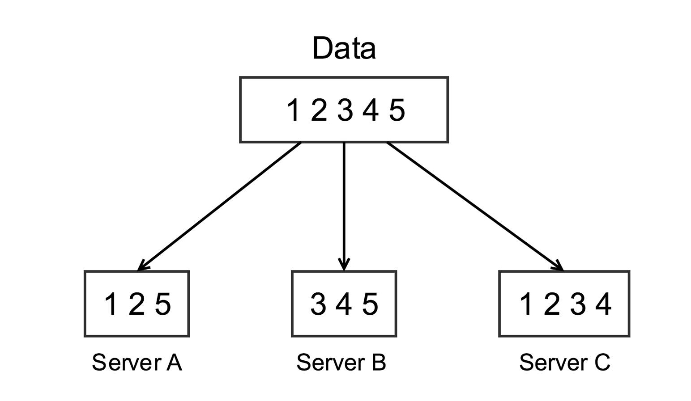

Authors:
Rongrong Bao
Tom Wiesing
Atabak Hafeez
Jinbo Zhang
Effective Caching in Online Video Platforms
Course:
Big Data: Big Boon or Big Brother?!
Instructor:
Prof. Dr. Adalbert F.X. Wilhelm
Semester:
Fall 2015
What is Caching?
Caching is a method to store data in a so-called cache.
It helps improve the efficiency of the computer and the overall efficiency of the task at hand.
Caching involves pre-loading data into a certain area of memory known as a “buffer” in the local machine.
YouTube was using RTMP-based Dynamic Streaming.
If a user had a relatively slow connection, this would not allow them to view the video as smoothly as one would want.
They could pause the video and view it later when the whole video had buffered to the local storage of the browser.
YouTube was able to exploit this feature resulting in higher resolution videos being available to the user in a more efficient manner.

Source: http://dyn.com/wp-content/uploads/2011/09/1691_repetitive.jpg
Advantages
Distributed Caching
A distributed cache may span multiple servers so that it can grow in size and in transactional capacity
With distributed cache, a website can respond to more requests simultaneously.
The distributed cached data remain accessible to every server that runs the application when servers are added or removed.

Content Delivery Network
A
Content Delivery Network
(CDN) is a system of distributed network that delivers web contents to a user based on the geographic locations of the user
Servers nearest to the website visitor will respond to its request, the CDN can reduce traffic on the primary network
Disadvantages
Technical Side effects
There is a lot of overhead to check if a video is already in the cache
The video might have changed in the meanwhile.
Old videos or videos the user never really watched could end up in the cache and take up disk space.
The provider no longer has complete control over what happens with the videos.
Social Implications
Videos could be predicted and pre-loaded when the user is not interested in them.
Users might not want to have their viewing history recorded.
YouTube sells the users (anonymized) data to advertisers.
Summary
It is important that users can a watch video (on services like YouTube) fluently. This uses caching which is a method to store data in a cache.
A more specific kind of caching - buffering - consists of preloading data into a certain area of memory of local machine.
Two techniques to deliver web contents effectively are Distributed Caching and Content Delivery Networks.
Two techniques to deliver web contents effectively are Distributed Caching and Content Delivery Networks.
The disadvantages of caching is that the cache is difficult to maintain.
Social implications of caching - Users privacy: Users viewing history might be used without their consent.
Sources
Rick Anderson, Tom Dykstra, and Mike Wasson. Distributed caching.
Vangie Beal. What is Content Delivery Network?
Citrix. What is caching?
Apache Traffic Server Documentation. HTTP proxy caching.
Viktor Mayer-Schnberger. Big Data: A revolution that will transform how we live, work and think.
Jan Ozer. What is MPEG DASH?
Kaushik Pal. Weighing the pros and cons of real-time big data analytics.
Tim Siglin. Online video jumps on the big data bandwagon.
Craig Smith. 120 amazing youtube statistics.
Heriot-Watt University. Pros and cons of web caching.